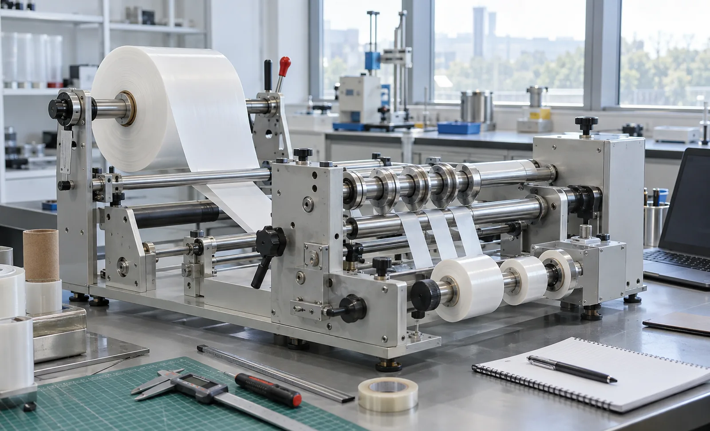
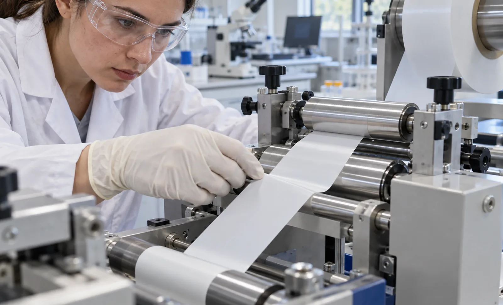

Published September 23, 2026 | By HDPTH Technical Editorial Team

Development teams buy slitters for four jobs: cutting samples for customers and testing, evaluating a new material’s slit edge behaviour, developing a slit-and-rewind recipe before it reaches production, and running short campaigns that do not justify a production line. The first two need convenience; the last two need predictive accuracy. Most specification mistakes happen when a machine bought for convenience is later asked to make production decisions.
Width: start from material, not from the catalogue
Ask what you must be able to run. Coupon cutting and narrow-strip work can be done on a bench unit with a few hundred millimetres of usable width. Reproducing a production slit pattern, or cutting customer sample rolls from a pilot parent roll, needs enough width for the widest pattern plus edge trim — and it needs the parent roll to exist, so check what widths your pilot coater or nonwoven line actually produces. A pilot slitter feeding a pilot coating, laminating or embossing line should match that line’s web width so trials do not need an intermediate conversion.
Speed: the number that should not decide the purchase
Pilot work rarely needs production speed, and a machine optimised for top speed is often poor at the low-speed end — cogging, unstable tension, and drive behaviour that only settles at high rpm. What matters is the lowest stable speed and tension, smooth acceleration from standstill, and repeatable stopping. Ask the vendor for the minimum stable tension and speed, not the maximum, and confirm how the drive behaves when the trial runs a few metres rather than a few hundred.
Equivalence: the rules that make results transfer
Scale-up works when the physics matches. Agree these points with the machine builder and write them into your trial protocol:
- Cutting method and geometry: same method — shear, razor or score — and the same knife diameter, edge angle and clearance philosophy as production, ideally the same holders and blades. See shear, razor and score slitting and knife clearance and overlap.
- Tension per unit width: specify tension as force per unit width, so a narrow web sees the same stress state as a wide one.
- Nip loading per unit width: lay-on roller and nip pressures scale the same way — see lay-on roller nip pressure.
- Wrap and roller geometry: representative wrap angles and roller diameters, so the web sees similar bending and traction.
- Winding mode: the same center or surface winding strategy and taper profile — see center versus surface winding and taper tension.
Tension architecture and data
R&D needs measured tension, not just a setpoint. Choose closed-loop control with load-cell feedback and visible trace data, and confirm the system can log tension, speed and length per trial. A dancer can be acceptable on a simple lab machine, but know which you are buying and why — see load cell versus dancer control and tension zone architecture. Recipe storage and export are what make trials comparable; see recipe management and line data and data logging.
Modularity: buy options that change what you can study
The most valuable options on a lab or pilot slitter are the ones that change the process, not the ones that add convenience:
| Module | What it enables | Worth specifying when |
|---|---|---|
| Interchangeable knife stations | Shear, razor and score cutting evaluated on the same web | Cutting method is still open, or several materials are in development |
| Production-compatible holders | Same blades and holders as the production line | Lab results must predict production edge quality |
| Quick-change shafts and chucks | Fast swap between core sizes and slit patterns | Many short trials, small campaign work |
| Short threading path | Runs of a few metres instead of tens | Material is expensive or only available in short lengths |
| Inspection lighting or camera | Edge and defect assessment without leaving the machine | Edge quality is a trial output, not a byproduct |
| Process add-ons (corona, emboss, perforate) | Combined process trials in one pass | Your programme genuinely needs them — each adds setup and maintenance |

Practical requirements that get overlooked
- Short-length capability: minimum threading length, and clean starting and stopping within a few metres.
- Utilities: single-phase or three-phase power, air demand, and whether extraction is needed.
- Floor space: footprint, weight and floor loading — and whether the machine can be moved between labs.
- Cleanliness: wipeable surfaces and contained trim handling for medical or battery work — see web cleaning systems.
- Safety: a small machine still needs compliant guarding and interlocks; see machine safety and guarding.
Budget and what to expect
Laboratory and pilot slitters span a broad range: bench units for narrow sample work sit at the low end, modular pilot machines with interchangeable knife stations, closed-loop tension and data logging considerably higher, and pilot lines built to mirror a specific production process higher again. Because utilisation is intermittent, the cost of a wrong choice is not lost output but misleading results. Judge the purchase on total cost of ownership including tooling sets.
Equipping a laboratory or pilot line?
Send HDPTH your materials, widths, core sizes and the production machine you need to mirror. We will propose a configuration with matching knife geometry and tension architecture.
Submit Your Project InquiryQuestions to put to every vendor
- Can this machine be fitted with the same knife geometry and holders as my production slitter?
- What is the lowest stable tension and speed, and how is tension measured and logged?
- What is the minimum threading length, and can it run a few-metre trial cleanly?
- Which slit widths, core sizes and rewind diameters are supported, and how fast is the changeover?
- Which knife stations are interchangeable, and what does each additional station cost?
- What utilities, floor loading and guarding does the machine require, and what training is included?
Related reading
Continue with site preparation for your lab space and the commissioning checklist to make sure the machine is verified the way production lines are.
Contact HDPTHFrequently asked questions
What web width should a laboratory slitter rewinder have?
Choose width from the material you must run rather than from the machine catalogue. A bench unit handling narrow strips is enough for coupons and narrow samples, but reproducing a production slit pattern or cutting customer samples needs enough width for the wider of those plus trim allowance. A pilot machine feeding a pilot coating or laminating line should match that line's web width.
How fast does a pilot slitter rewinder need to run?
Fast enough to reach the tension, nip and cutting conditions you want to study, and no faster. Most laboratory work runs well below production speed, and a machine sold on top speed usually sacrifices low-speed tension stability. Ask for the lowest stable tension and speed, how the drive behaves at low speed, and whether the control holds setpoint during slow acceleration.
Can laboratory slitting results be scaled up to a production machine?
Only if the physics matches, not just the recipe. Keep the same cutting method and knife geometry, express tension per unit width rather than as a total force, use the same nip loading per unit width, keep wrap angles and roller diameters representative, and wind in the same mode with the same taper. Where those match, edge quality, roll hardness and waste behaviour transfer well.
Which modules are worth specifying on a laboratory or pilot slitter?
Interchangeable slitting stations so shear, razor and score cutting can all be evaluated, knife holders that accept production tooling, quick-change rewind shafts and core chucks, and tension measurement with data logging so trials can be compared. Inspection lighting and a short threading path add practical value. Add corona, embossing or perforation only if your programme genuinely needs them.
Should an R&D lab buy a new, used or refurbished pilot slitter?
New gives matching tooling, documented tolerances, current safety compliance and controls support, which matters when results must be defensible. Refurbished is good value if the slitting station, shafts and bearings are sound and documentation exists, but inspect it as carefully as a production purchase. Either way, prioritise a machine that accepts the same knife geometry and holders as your production line.
Sources
- AIMCAL: web handling and converting technical resources for pilot and production scale-up
- TAPPI: test methods and laboratory practice for roll and web materials
- ISO: published standards for measurement, sampling and laboratory reporting
- European Commission: mechanical engineering sector and machinery regulatory framework
- OSHA: machine guarding requirements for laboratory and pilot equipment